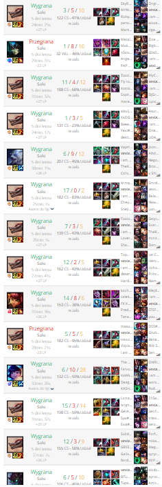

Moje hobby czyli granie w gry komputerowe
moja ulubiona gra czyli league of legends
League of Legends to popularna gra typu MOBA (Multiplayer Online Battle Arena) stworzona przez Riot Games. Gra została wydana w 2009 roku i stała się jednym z najważniejszych tytułów e-sportowych na świecie. Jest to gra drużynowa, w której gracze walczą w dwuosobowych drużynach (zwykle 5 na 5), starając się zniszczyć bazę przeciwnika, zwana Nexusem. logo lolamagiczna noc (wygrane 12 gier z 14)
magiczna noc polegała na tym, że z moim duo (przy okazji najlepszym kolegą filipem) graliśmy w lola od 17 do 2 wygrywając ogrom gier, które dały nam szanse na wbicie wyższej rangi i wyjscia z low elo. Zaowocowało to, że w końcu przyjemnie grało nam się w tą gre, nie denerwowaliśmy się na drużyne która zawsze była słabsza od nas i musieliśmy ich prowadzić po zwycięstwo, również dzięki tej okazji pogłębiliśmy naszą znajomość rozmawiając na wiele tematów między innymi dlaczego średniawski jest lepszy od tytusa, czy zaczeliśmy krytykować zachowania wielu osób (ploteczki) zdj winstreaku